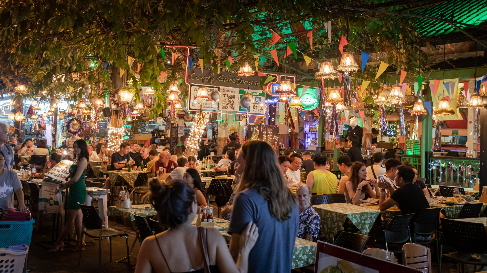

STEP 1
STEP 2
STEP 3
STEP 4
STEP 5
STEP 6
00:00
Tom, votre fils, n’a plus de vie sociale depuis sa dernière crise d’AVF en public. Après des jours de négociation, vous arrivez à le convaincre de venir à la pizzeria du coin avec toute la famille.
La salle est bondée...
STEP 1
STEP 2
STEP 3
STEP 4
STEP 5
STEP 6
STEP 1
STEP 2
STEP 3
STEP 4
STEP 5
STEP 6
Vous repensez à cette journée
Vous revoyez le regard paniqué des autres clients, vous vous rappelez les critiques.
Et si on était pas sorti
Et si j’avais demandé la table au fond
Et si j’avais vérifié son état avant notre départ
Elle vous gagne à nouveau et vous essayer de trouver un sens à tout cela. C’était la première fois que vous arriviez à convaincre Tom de vous accompagner et voilà qu’il n'osera plus sortir…
à nouveau...
3 personnes sur 1000 sont atteintes d’AVF
Sur la population suisse cela représente plus de 8’000 personnes
C’est toujours une source de stress et d'inquiétude. Au fil des années nous avons trouvé une manière de gérer les crises avec notre fis, mais cela demande de l’abnégation et de la patience avec beaucoup d’amour.
Les passants ont des mouvements de peur ou font des commentaires inadaptés pour trouver des explications.
Chaque premier samedi du mois, un groupe de parents, compagnons et compagnes se réunissent à Champéry pour échanger sur leur quotidien, leurs craintes mais aussi pour partager leurs astuces et leurs réussites.
Que vous ayez envie de nous partager des choses ou juste de venir écouter, soyez les bienvenus dès notre prochaine réunion.
Aucune inscription n’est nécessaire